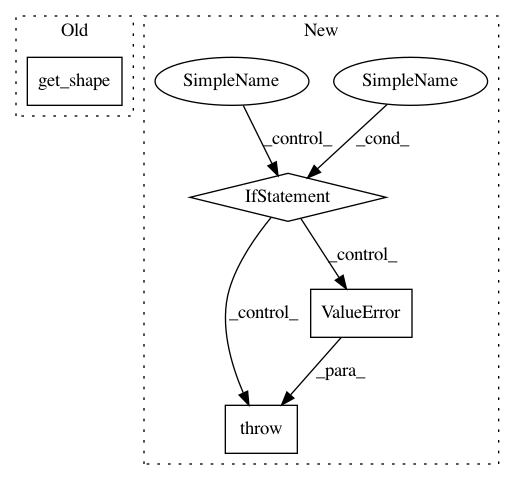

330154d9f5344f0a6ab39b3a313626c4b574dbbd,kronecker.py,,determinant,#Any#,6
Before Change
for core_idx in range(kron_a.ndims()):
core = cores[core_idx]
core_det = tf.matrix_determinant(core[0, :, :, 0])
core_pow = pows / core.get_shape()[1].value
det *= tf.pow(core_det, core_pow)
return det
After Change
else:
i_shapes = raw_shape(kron_a)[0]
if shapes_defined:
if i_shapes != j_shapes:
raise ValueError("The argument should be a Kronecker product of square "
"matrices (tt-cores must be square)")
pows = tf.cast(tf.reduce_prod(i_shapes), kron_a.dtype)
cores = kron_a.tt_cores
det = 1
for core_idx in range(kron_a.ndims()):
In pattern: SUPERPATTERN
Frequency: 3
Non-data size: 4
Instances
Project Name: Bihaqo/t3f
Commit Name: 330154d9f5344f0a6ab39b3a313626c4b574dbbd
Time: 2017-02-11
Author: izmailovpavel@gmail.com
File Name: kronecker.py
Class Name:
Method Name: determinant
Project Name: Bihaqo/t3f
Commit Name: 30b8a672d35c2ebf94939278c127bd4e902ca85a
Time: 2017-02-14
Author: novikov@bayesgroup.ru
File Name: ops.py
Class Name:
Method Name: to_tt_tensor
Project Name: analysiscenter/batchflow
Commit Name: 89f41f9280daceb58895f6a958c493f126db03bc
Time: 2019-12-05
Author: Tsimfer.SA@gazprom-neft.ru
File Name: batchflow/models/eager_torch/layers/resize.py
Class Name: Combine
Method Name: __init__